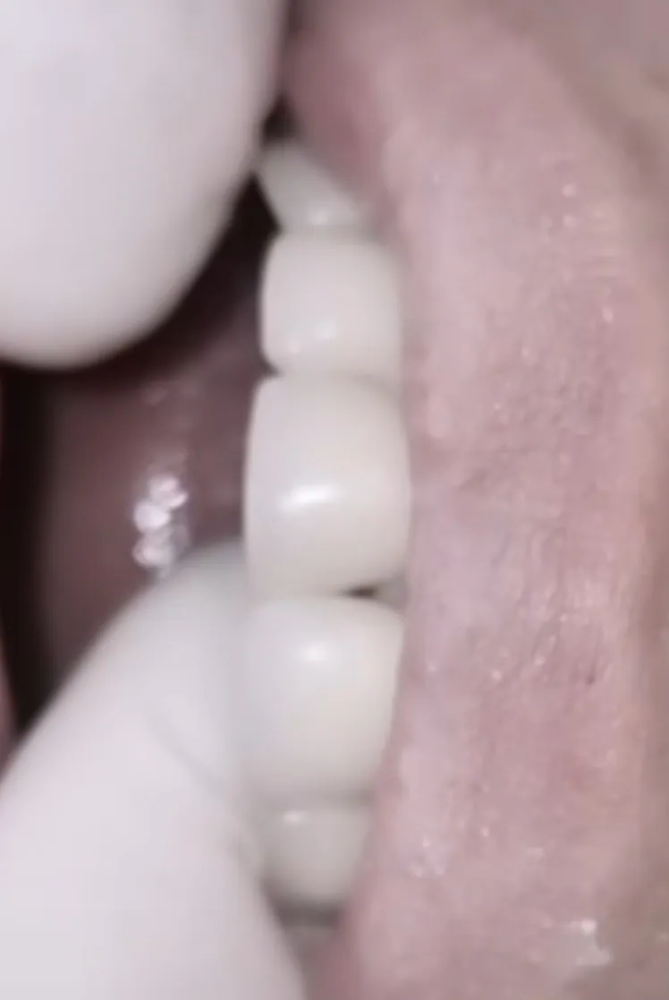
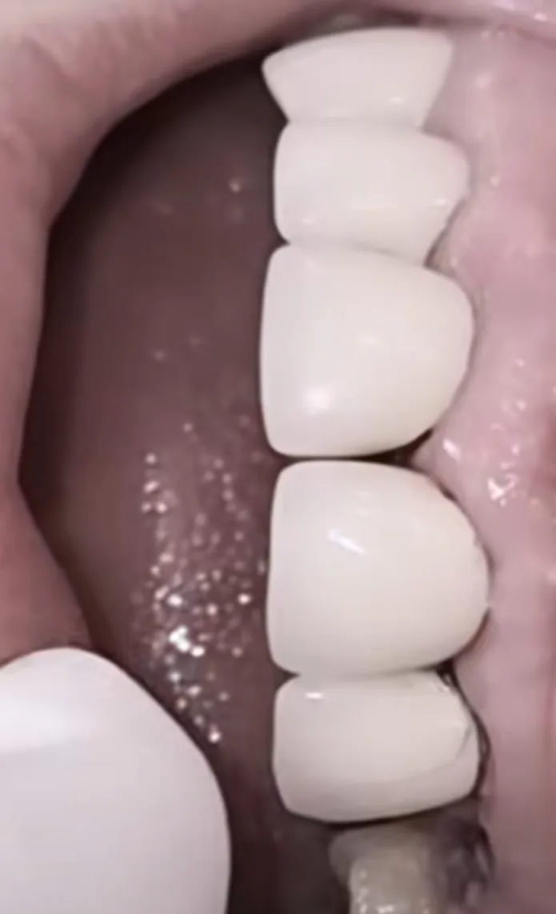

نسخه استخراجشده؛ ترجمه یا تأیید علمی انجام نشده است. وضعیت: captured
در کیس پنج دندان قدامی، سه روکش متصل در یک سمت و دو روکش متصل در سمت دیگر حفظ شدند؛ نتیجهی نهایی با مرحلهی امتحان تفاوت داشت.
مارجین باید هم دستنخورده باشد و هم تطابق درست داشته باشد. اگر تخریب از ابتدا بوده، پایه نامناسب بوده است؛ اگر بعداً رخ داده، مسیر ورود پوسیدگی مطرح است و محتملترین مسیر عدم تطابق مارجین است.
وضعیت بیولوژیک را تغییر نمیدهد و مسئولیت طرح درمان با درمانگر است. حفظ روکشها با نتیجهی معیوب از روز اول بهواسطهی محدودیت مالی توجیه نمیشود.
ریختهگری و برش و پرداخت اسپرو ممکن است فرم کور را تغییر دهند. رتروفیت فلزی حتی زیر روکش منفرد حساس است؛ در روکشهای متصل خطای هر پست بر نشست کل سگمنت اثر دارد.

کل مجموعه از نشست کامل بازمیماند و روکشهای سگمنت مشکل پیدا میکنند. پست در کانال آزادی هدایت شدن ندارد و سمان داخل کانال هم در برابر نشست مقاومت میکند؛ سمان همزمان تشخیص منشأ خطا را دشوار میکند. در روکش منفرد فقط همان روکش بالاتر میایستد؛ در سگمنت متصل، یک پست بالاترمانده نشست همهی روکشهای همان سگمنت را مختل میکند.
پس از قرار گرفتن روی پستها، دیاستم و ناهمسطحی انسیزال ایجاد شد. در امتحان سانترالها همتراز و بدون دیاستم بودند؛ در پایان دیاستم، ناهمسطحی و لقی روکش دیده شد.
